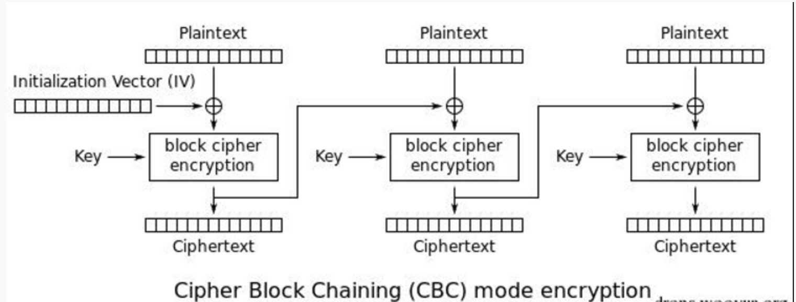
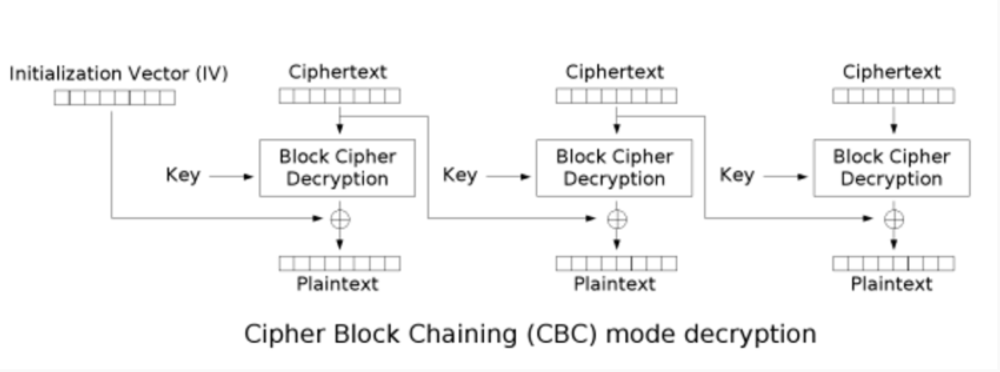
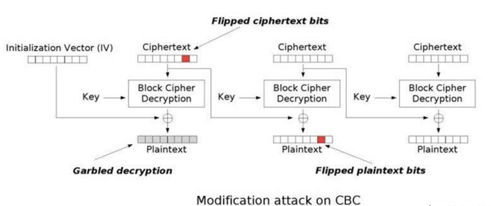

在CBC模式中，每个明文块先与前一个密文块进行异或后，再进行加密。在这种方法中，每个密文块都依赖于它前面的所有明文块。同时为了保证保证即使对相同明文多次加密，也可以得到不同的密文，在第一个块中使用IV(初始化向量)。当获取到一组明文与其对应的IV，密文时，即可发起CBC字节翻转攻击。
加密过程
加密过程如下所示:

文字版的加密过程：
- 首先将明文分组(常见于以16字节一组)，位数不足进行填充。
- 生成一个随机的初始化向量(IV)和一个密钥。
- 将IV和第一组明文异或。
- 用密钥对异或的结果使用密钥key进行加密，得到密文C1。
- 使用C1与第二组明文进行异或，然后使用key加密，得到密文C2。
- 重复4-5,直到最后一组明文。
- 将IV和加密后的密文拼接在一起，得到最终的密文。
解密过程
解密过程如下所示:

文字版的解密过程：
- 从密文中提取出IV，然后将密文分组。
- 使用密钥key对第一组密文进行解密，然后和IV进行异或得到第一组明文。
- 使用key对第二组密文进行解密，然后和第一组密文进行异或得到第二组明文。
- 重复3，直到最后一组密文。
CBC翻转攻击
CBC翻转攻击原理:
而CBC翻转攻击与解密过程有关。直观来看，IV会影响到第一组明文的值，而每一组明文的值都会被前一组密文所影响。若第一块密文中的某个字节被改变，则解密出来的第二组明文对应的字节也会被改变。可以从下图看出这整个过程

可以得知，某组密文的改变会影响到其对应的明文块的完全改变以及下一个明文块中对应位置的改变。
此攻击造成的影响:
- 绕过过滤器
- 改变用户权限提升至管理员
- …
CBC翻转攻击过程
具体的如何改变明文呢？假设要改变第二组明文的值，那么就需要改变对应的第一组密文的值。这里就要利用到异或的原理，若A = B XOR C，那么A XOR B XOR C = 0。所以，0 XOR ANY = ANY。假设ANY为最终我们想要改变的明文字节值。 有如下的计算方式:
1 | P[1] = decrept(C[1]) XOR IV |
由上述可知，改变的密文字节值的计算方式为P[2] XOR C[1] XOR ANY。python中使用如下方式进行计算
1 | chr(ord(C[1])^ord(P[2])^ord(ANY)) |
对应的明文确实如期地改变了，但由于密文C[1]的变化，使得明文P[1]的结果也面目全非。而明文P[1]的结果与IV相关，IV为我们可控。因此按照同样的方法改变IV的值，最终就得到了更改后的密文和IV。
对此感兴趣的同学可以p0’s师傅出得一道题来看看。